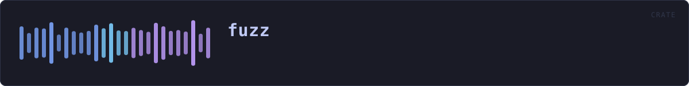

fuzz
reference · the same page on GitHub
HOW THE CRATE FITS TOGETHER
Every arrow is a crate:: or super:: path one module actually uses, read out of the source rather than drawn by hand.
The same graph as Mermaid source
%%{init: {"theme":"base","themeVariables":{"background":"#1a1b26","primaryColor":"#1f2335","primaryTextColor":"#c0caf5","primaryBorderColor":"#7aa2f7","secondaryColor":"#16161e","tertiaryColor":"#16161e","lineColor":"#737aa2","textColor":"#c0caf5","mainBkg":"#1f2335","nodeBorder":"#7aa2f7","clusterBkg":"#16161e","clusterBorder":"#2f3549","fontFamily":"ui-monospace, SFMono-Regular, Consolas, monospace","fontSize":"14px"}}}%%
flowchart TDThis site loads no third-party script, so it cannot run Mermaid; the diagram above is the same nodes and edges drawn by the generator instead. GitHub renders the source below directly.
THE FILES
| File | Lines | What it is |
|---|---|---|
container_header.rs | 52 | The .veil container header, coverage-guided. |
guard_manifest.rs | 53 | The integrity manifest parser, coverage-guided. |
hybrid_keys.rs | 36 | Key and encapsulation decoding, coverage-guided. |
lock_file.rs | 37 | The app-lock file, coverage-guided. |
wav_chunks.rs | 46 | The RIFF chunk walker in veilvoice-meta, coverage-guided. |
wav_preflight.rs | 35 | The WAV pre-flight in veilvoice-audio, coverage-guided. |